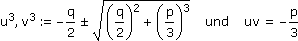
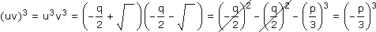
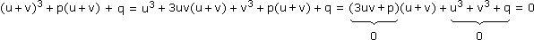
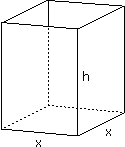
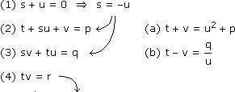

Anhang zu: KOMPLEXE ZAHLEN
Die konjugiert komplexe Zahl erhalten wir durch Vorzeichenwechsel beim Imaginärteil bzw. Winkel. Grafisch entspricht das einer Spiegelung des Zeigers an der reellen Achse.
z + z* = (a + jb) + (a – jb) = 2a
 Rez =
Rez = z + z*
2
z – z* = (a + jb) – (a – jb) = 2bj Imz =
Imz = z – z*
2j
z·z* = (a + jb)(a – jb) = a2 + b2
|z| = √z·z*Reejφ = cosφ =
ejφ + e–jφ
2
cosz := ejz + e–jz
2
Imejφ = sinφ = sinz :=
ejφ – e–jφ
2j
sinz := ejz – e–jz
2j
Die allgemeine kubische Gleichung
az3 + bz2 + cz + d = 0 mit a,b,c,d
bringen wir mittels Substitution z = z^–e und geeigneter Wahl von e in die reduzierte Form:
z^3 + pz^ + q = 0 mit p,q
Die Lösung davon ist als Formel von Cardano bekannt:
z^1,2,3 = u + v mit 
Beweis:

Da (–p/3)3 genau 3 Kubikwurzeln hat, müssen von den 9 möglichen uv-Kombinationen jeweils 3 dasselbe ergeben und in einem Fall eben –p/3:

Aufgabe: Ein Behälter mit quadratischer Grundfläche ist mehr hoch als breit und oben offen, die Oberfläche außen ist 28 dm2 und das Volumen 12 dm3. Bestimme die Abmessungen des Behälters.

[Länge] = dm
(1) O = x2 + 4xh = 28
(2) V = x2h = 12 h =  (1) x2 + = 28 ·x
(1) x2 + = 28 ·x
h = 12
x2
(1) x2 + 48
x
x3 – 28x + 48 = 0 … kubische Gleichung in reduzierter Form
u3 = –24 + √242 + (–9,3)3 = –24 + 15,4j = (*)
r = √rx2 + ry2 = √(–24)2 + 15,42 = 28,52
φ = arctan (± 180°, falls rx<0) = arctan + 180° = 147,3°
ry
rx
15,4
–24
(*) = 28,52e147,3°j 3√.
u1,v1 = 3,06e±49,1°j
u2,v2 = 3,06e±169,1°j
u3,v3 = 3,06e±289,1°j
Da uv = 9,3 auf der positiven reellen Achse liegt, müssen die Winkel von u und v in Summe 0 ergeben:
x1 = u1 + v1 = 3,06[cos49,1° + jsin49,1° + cos(–49,1°) + jsin(–49,1°)] = 4
h1 = 0,75x2 = u2 + v2 = 3,06[cos169,1° + jsin169,1° + cos(–169,1°) + jsin(–169,1°)] = –6
x3 = u3 + v3 = 3,06[cos289,1° + jsin289,1° + cos(–289,1°) + jsin(–289,1°)] = 2
h3 = 3Da laut Angabe x < h, ist der Behälter 2 dm breit und 3 dm hoch.
Die allgemeine quartische Gleichung bringen wir wie gehabt mittels Substitution in die reduzierte Form:
z4 + pz2 + qz + r = 0 mit p,q,r
Die linke Seite faktorisieren wir in quadratische Terme:
z4 + pz2 + qz + r = (z2 + sz + t)(z2 + uz + v) = z4 + (s + u)z3 + (t + su + v)z2 + (sv + tu)z + tv
Koeffizientenvergleich:

(a)2 – (b)2: 4tv = u4 + 2pu2 + p2 – ·u2
q2
u2
u6 + 2pu4 + (p2 – 4r)u2 – q2 = 0
Das ist eine kubische Gleichung in u2, aus der wir uns eine Lösung für u holen, dann folgt:
(1) s = –u
(a) + (b): 2t = u2 + p +
q
u
(a) – (b): 2v = u2 + p –
q
u
Da unsere Gleichung genau dann erfüllt ist, wenn einer der quadratischen Terme null ist, sind nur mehr zwei quadratische Gleichungen zu lösen.
Bem: Die Lösung der kubischen und quartischen Gleichung wurde 1545 von Cardano veröffentlicht, Bezug nehmend auf Entdeckungen von Del Ferro, Tartaglia und Ferrari. Gleichungen höheren Grades sind nicht mehr allgemein über Wurzelausdrücke lösbar (Satz von Abel-Ruffini, 1824).